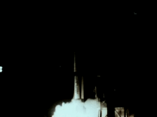
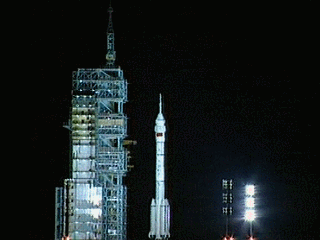
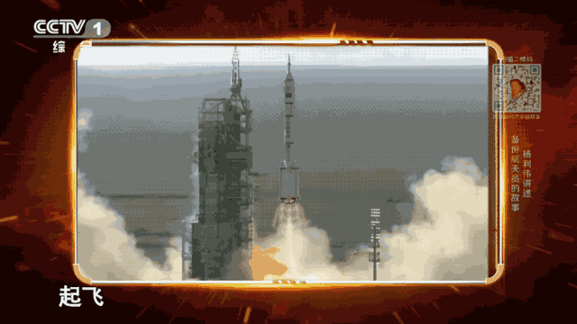
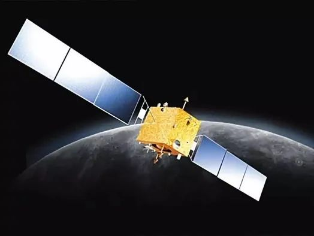

发展航天事业 建设航天强国
在世界科技进步迅猛发展、综合国力竞争日趋激烈的新形势下，1992年9月，党中央批准我国载人航天工程以载人飞船起步、以空间站为目标的“三步走”发展战略。第一步，发射载人飞船，建成初步配套的试验性载人飞船工程，开展空间应用实验；第二步，突破航天员出舱活动技术、空间飞行器的交会对接技术，发射空间实验室，解决有一定规模的、短期有人照料的空间应用问题；第三步，建造空间站，解决有较大规模的、长期有人照料的空间应用问题。
了解更多主要人物
航天事业发展历程

“长征一号”开辟中国问天路
1970年5月1日晚上，天安门广场上人山人海。《东方红》的旋律通过广播在天安门广场上空响起，明亮的东方红一号卫星飞越天安门上空。

从神舟一号到十三号
神舟飞船，是我国自行研制的宇宙飞船。我们今天所看到的神舟十三号飞船，从名字就可以看出是神舟系列的13代飞船。可以说每一代神舟飞船，都有着不同程度的进步。

“神舟五号”载人飞船发射成功
航天员杨利伟于2003年10月15日9时整在酒泉卫星发射中心发射，次日返回，10月16日6时23分降落。它的成功发射与返回标志着我国成为世界上第三个把人送入太空的国家。

“嫦娥一号”探月行动
“嫦娥奔月”这个在中国流传千古的神话传说，终于变成现实。它是继人造地球卫星、载人航天之后，中国航天活动的又一个里程碑。它开辟了中国航天的新领域，为未来的深空探测积累了丰富的经验。